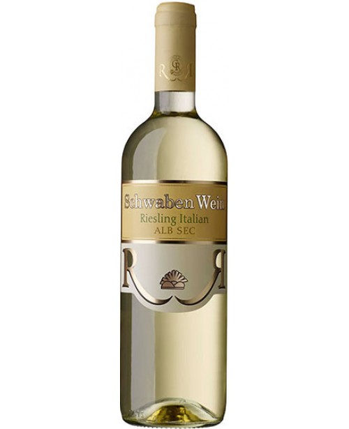
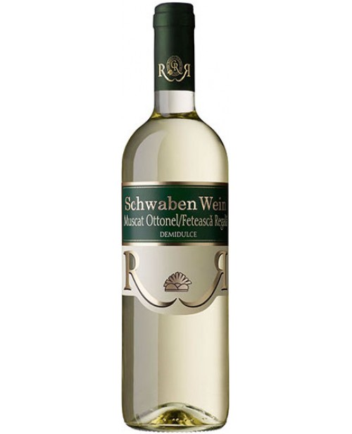
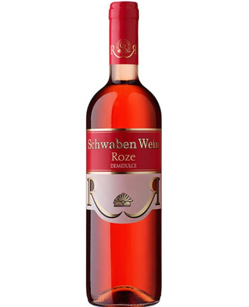
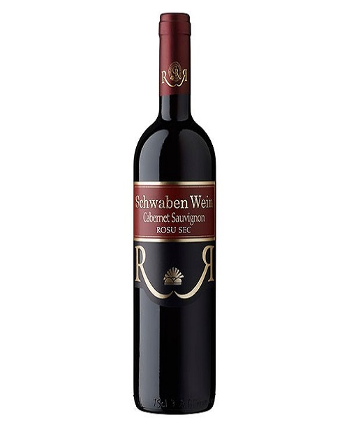
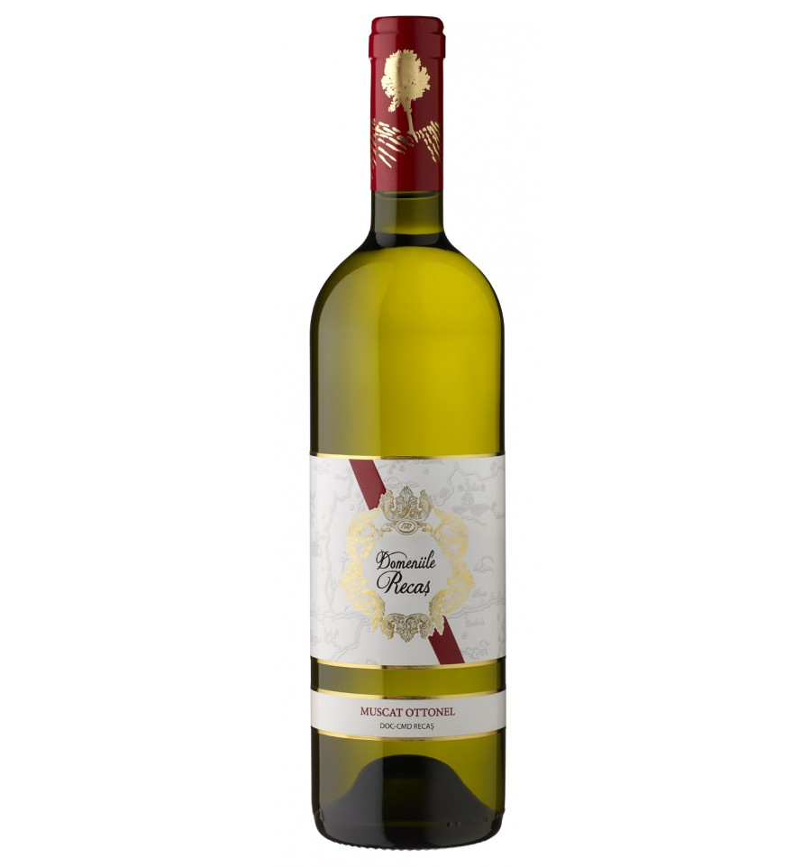
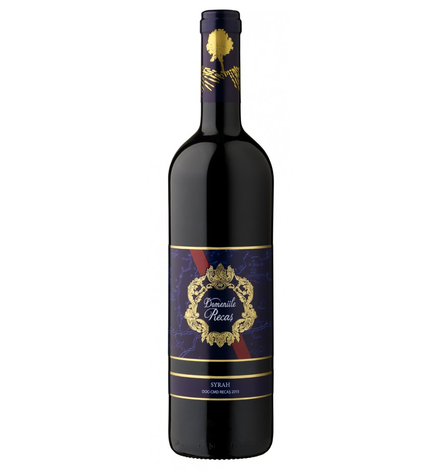
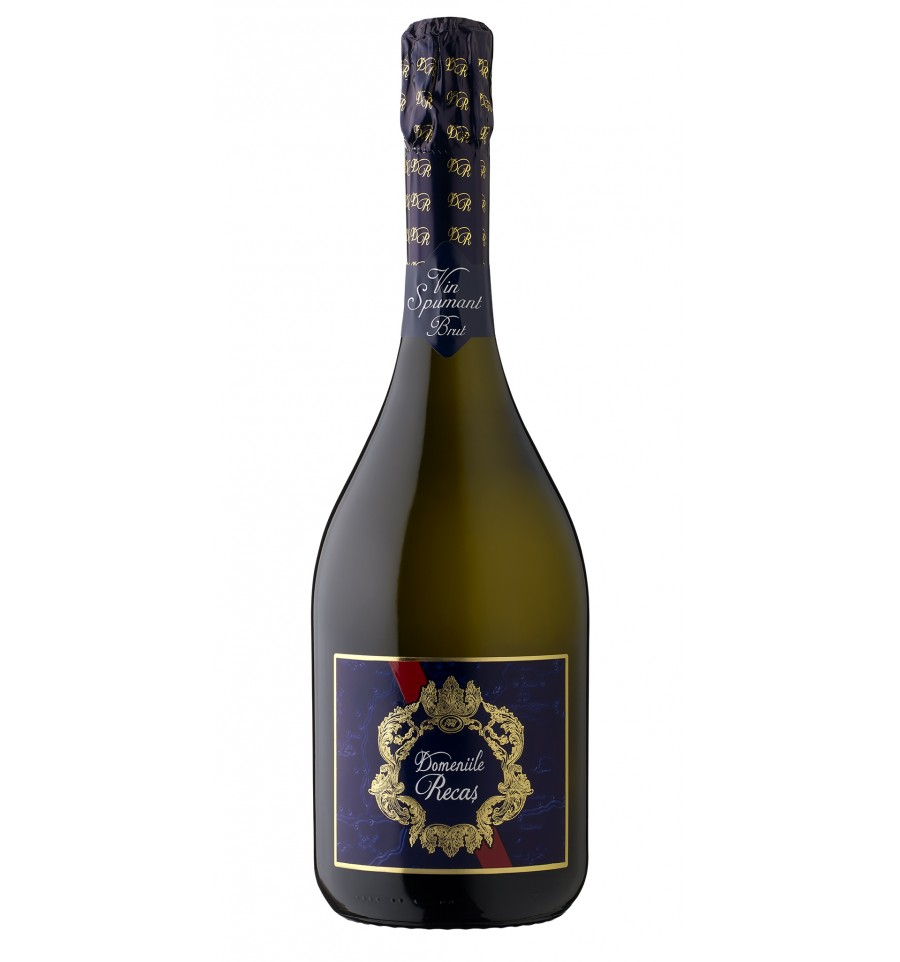
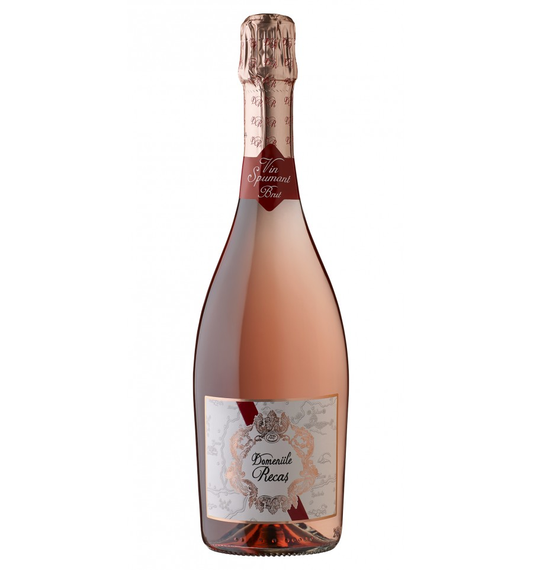

CRAMA RECAȘ
Schwaben Wien
Unii oameni numesc acest tip de vin “entry level”, altii ii spun “quality”. Noi, cu reverenta, ii spunem celui mai accesibil vin imbuteliat pe care il producem “Schwaben Wein”, vinul svabilor. Si, sa nu uitam, “simplii” svabi i-au dat lumii pe Faust si pe Einstein, pe Hauff si pe Heidegger, pe Hesse si pe Kepler, pe Daimler si pe Diesel. Acest vin ofera atat de mult, pentru un pret atat de mic. Unii ii spun vin “simplu de inteles”, altii au spus despre svabi ca sunt oameni simpli. Noi credem ca e mai usor de inteles cat de departe a ajuns Cramele Recas atunci cand cel mai “simplu” vin arata ca Schwaben Wein. Vorba svabilor, “trei lucruri fac o casa frumoasa: munca, munca si munca.
- 
Reisling Italian
- 
Muscat
- 
Roze
- 
Cabernet Sauvignon
Domeniile Recaș
Domeniile Recaș, gama de 5 vinuri, lansată în iunie 2016 cu ocazia aniversării oficiale
a 25 de ani împliniți de Cramele Recaș, este prima gamă de vinuri din portofoliul producătorului bănățean care cuprinde în numele
sau denumirea regiunii unde iau naștere vinurile favorite ale multor consumatori, români și străini deopotrivă. Pentru a puncta cât
mai bine poziționarea geografică a localității Recaș, a terroir-ului și a istoriei viticulturii de pe aceste meleaguri, eticheta
de vinuri Domeniile Recaș reprezintă o hartă stilizată a regiunii după un model original cules de pe o litografie a Banatului datând
din secolul al XVIII-lea.
În premieră pe piața românească de branding, etichetele celor patru vinuri sunt realizate prin procedee
tehnice speciale presupunând plasarea elementelor hărții în relief tactil prin tehnica embossarii braille, astfel încat etichetele pot fi recunoscute
la raft și de către nevazători. Dopurile sticlelor de vin reprezintă de asemenea o premieră în România, fiind realizate, după patentul Normacorc
dintr-un polimer al uleiului de trestie de zahăr, rezultatul garantând lipsa contaminanților specifici dopurilor de plută și o rezistență și elasticitate
mai mari în timp.
- 
Muscat Ottonel
- 
Syrah
- 
Spumant Alb
- 
Spumant Roze